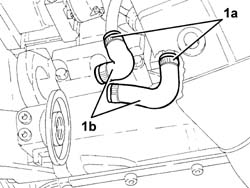
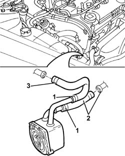

1088D47 oil exchange sleeve - r r
- Path
- Procedures > 10 ENGINE > 1088 ENGINE COOLING > 1088D coolant hoses and sleeves > 1088D47 oil exchange sleeve - r r
- Kind
- repair procedure (removal / refitting; the operation number is the code)
- Applies to
- engines: 1.6 TS, 2.0 TS, 1.9 JTD 8V; all production periods
- Interactive page
- https://sloeber94.github.io/elrnDB-a147/en/#/3024912
Applies to: engines: 1.6 TS; all production periods; only with equipment: 120 CV
 Removing
Removing
 Refitting
RefittingPosition the vehicle on the ramp.
Proceed with the removal 1084B30 engine oil filter r r .
Proceed with the removal 1084C10 engine oil heat exchanger - r + r .
1. Loosen the bands (1a) and remove the engine oil heat exchanger coolant supply and return hoses (1b).

Applies to: engines: 1.6 TS; all production periods; only with equipment: 120 CV
Refitting
RemovingFit the engine oil heat exchanger coolant supply and return hoses and fix them using the bands.
Proceed with the refitting 1084C10 engine oil heat exchanger - r + r .
Proceed with the refitting 1084B30 engine oil filter r r .
Refill the engine oil lubrication system 1084A10 ENGINE OIL - Check level and top up, if necessary .
Refill the engine cooling system 0010T20 coolant change .
Remove the car from the ramp.
Applies to: engines: 2.0 TS; all production periods
Removing
RefittingPosition the vehicle on the ramp.
Proceed with the removal 7055B54 under-engine guard - r r .
Proceed with the removal 1084B30 engine oil filter r r .
Proceed with the removal 1084C10 engine oil heat exchanger - r + r .
1. Loosen the bands (1a) and remove the engine oil heat exchanger (1b) coolant supply and return hoses.
Applies to: engines: 2.0 TS; all production periods
Refitting
RemovingFit the engine oil heat exchanger coolant supply and return hoses and fix them using the bands.
Proceed with the refitting 1084C10 engine oil heat exchanger - r + r .
Proceed with the refitting 1084B30 engine oil filter r r .
Proceed with the refitting 7055B54 under-engine guard - r r .
Refill the engine oil lubrication system 1084A10 ENGINE OIL - Check level and top up, if necessary .
Refill the engine cooling system 0010T20 coolant change .
Remove the car from the ramp.
Applies to: engines: 1.9 JTD 8V; all production periods
Removing
Refitting1016A10 sound-proofing cover - r + r
7055B54 under-engine guard - r r
Position a suitable container to collect the coolant.
Disconnect the lower radiator hose and drain the engine cooling system.
1. Disconnect the coolant supply and return hoses from the heat exchanger.
2. Disconnect the hose from the rigid section of pipe.
Lower the lift.
3. Disconnect the hose connected to the water pump rigid inlet pipe, then remove the two supply and return hoses from the heat exchanger.

Applies to: engines: 1.9 JTD 8V; all production periods
Refitting
RemovingFit the supply and return hoses on the heat exchanger.
Connect the hoses to the rigid section of the pipe.
Connect the coolant supply and return hoses to the heat exchanger.
0010T21 coolant check density and top up if necessary